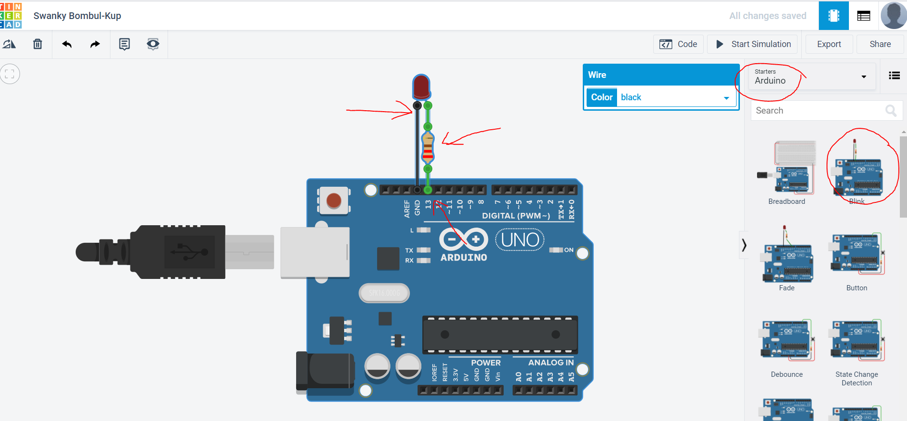
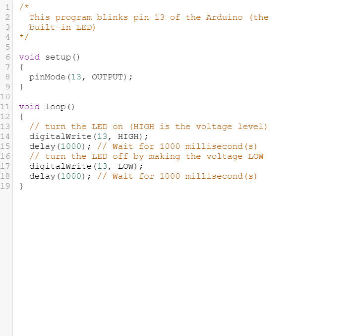
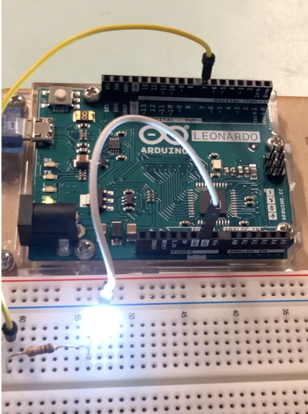
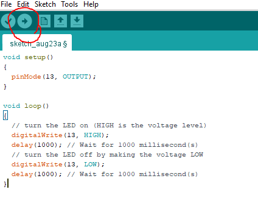
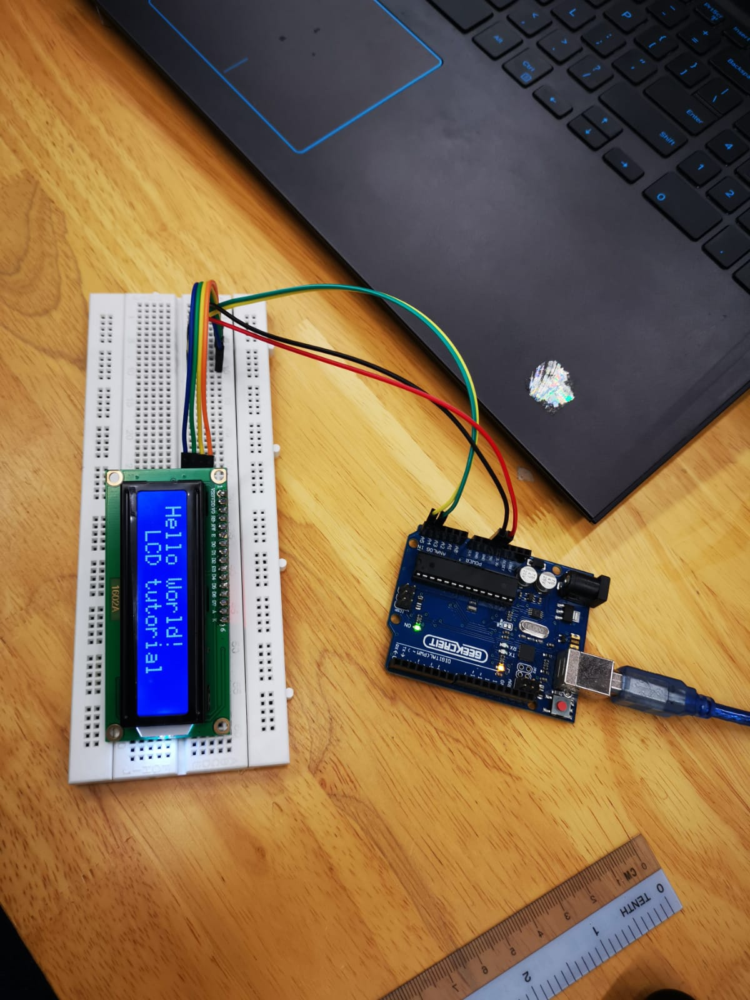
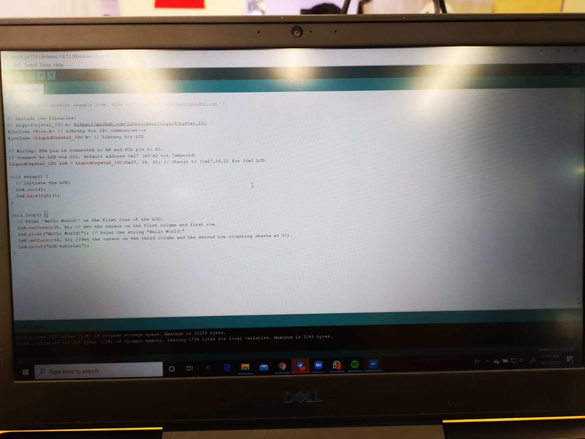

Embedded Programming with ARDUINO
Programming with Arduino is one of the topics taught during Digital Fabrication Lab. Arduino IDE programming is used to control electronics to perform specified functions that is to be used for our final project. To start programming you will require these.
- Arduino IDE (A must for arduino programming as this allows you to upload your codes onto your arduino board.)
- TinkerCAD circuits (This is a website that allows you to test your connections and coding without actually connecting.)
To start off with programming, lets start with Arduino IDE and how it works. To start off open Arduino IDE and you will see 2 columns void setup() and void loop().
void setup()
is where you put your declaration. Some examples are pinMode(13, OUTPUT);, Serial.begin (9600); and motor.setSpeed(17);. These lines of code basically is the start of every programming. Pinmode declares then specific Digital Output pin on the Arduino board as the output. This allows us to later on set the power of the pin to high or low with programming and allows us to do more with the board. Serial begin allows your Arduino IDE to show you how does your electronical components and arduino board functions with your code.(This will be further shown and explain later on). Lastly, motor setspeed basically changes the speed of your Stepper motor.
More codes that I looked up :Click Here!
void loop()
is where you insert the codes that you want your electronical parts to perform. Codes insertted into this part will continue to run unless stated in your code.( Further explanation in examples)
Lets try out a simple circuit with Tinker Cad circuit, a LED that lights up with programming. Lets go to Tinker Cad circuits and load in a pre-existing Arduino circuit with the name Blink.
 
The LED has a positive and negative end. with programming, we can send a certain voltage to the positive end of the LED to give it power to light up, but since the LED can't recieve too high of a voltage, a resistor has to be used to limit the voltage travelling to the LED. The negative end is then connected to the Ground pin so that voltage can flow through. The code selects Digital pin 13 as the output and with the code, we can control a certain time delay to send voltage to pin 13, this causes the LED to blink.
Now that we have tested out the connection and programming in TinkerCad, we are sure that this connection and programme works and wont BLOW UP. Now, we can do the same circuit with our board and components. Firstly, we must connect the cables and components as shown on TinkerCad. Since the wires that I have are only male to male, I had to use a breadboard to connect the Resistor to the LED. After connecting, type the programme into your Arduino IDE and connect your Arduino board to your laptop/pc with a USB type A connection. Next, upload your code to your Arduino board with the upload button. This will send the code to your board and start working.
 
Another electronical component that I have tested out was the LCD display and here is how I did it. In order to control the LCD dipslay with coding, a Arduino library has to be installed before hand so taht your Arduino actually recognises your codes.Link for Lcd display library:Click Me!. Read this guide about uploading libraries to ArduinoClick Me!
 
This simple connection with code allowed me to dipaly some text on my LCD display. The LCD display provided had a LCD adapter connected to it so the connection was much simpler than it was suppose to, for a LCD display without an adapter, check here.